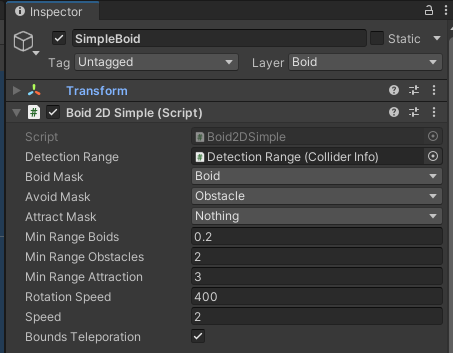
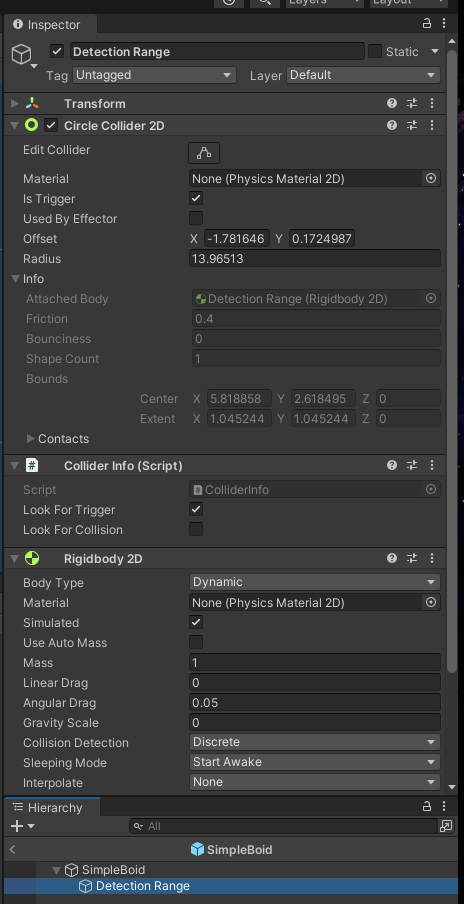

|
UnityToolbox
Brief documentation for all existing scripts.
|

|
|
UnityToolbox
Brief documentation for all existing scripts.
|
|
Boids refer to a swarm intelligence being named after "Bird-oid objects" and are first developed by Craig Reynolds.
The scripts present in the toolbox aim to implement such with the possibility to add additional complexity to their rules. Currently only a version for 2D space exists. (See Boid2DBase)
The only prerequisite is setting up the Manager System.
Boid2DBase is an abstract script which is required to be implemented to be used.
The toolbox provides a simple base implementation of the Boid2DBase, named Boid2DSimple.
Create an object and add the script. Add a 2D collider and set it to "Is Trigger".
Firstly, let us look at the fields, which need to be set:
| Simple 2D Boid |
|---|

|
The detection range is requires a ColliderInfo object. Create a child object of the boid and add the ColliderInfo script, as well as a 2D collider.
Set the collider to "Is Trigger", and define that the ColliderInfo should "Look For Trigger". Additionally a Ridgidbody2D is required, add it and set the "Gravity Scale" to 0.
Now drag the object into the detection range field. The collider placed on this object now act as the eyes of the boid. Adjust the collider size, to increase the maximum vision range.
| Detection Range |
|---|

|
The following three drop down menus define layer masks for what the boid sees as other boids, obstacles and attraction objects.
All objects defined with the boid mask require an implementation of the Boid2DBase script for the evaluation to work.
Furthermore the following three values define the specific minimum range of the respective objects. If the object is closer than defined, the boid will take action.
One can then set the rotation and movement speed.
Lastly one can define whether the boid should teleport to stay within camera bounds. If this is set to true, the boid will pop up at the other side of the screen once it has left it on one.
The BoidManager can be added for generalized boid management. Currently this only provides the option to pause all boids with an event.
The boid is now set up. One can now add obstacles and objects to be attracted to with the respective layer mask. Duplicate the boid or create some with other definitions and watch them move.
The Boid2DSimple implementation from before looks like the following:
This implementation does not add any additional functionality to the base implementation, and simply acts like a default boid.
If required, each method can evaluate relevant objects further, to add the additional functionality.
Boid2DBase.AdditionalAvoidanceCheck(..) for example is called once the boid has found an object which it wants to avoid.
Returning false means that the object is counted as an exception and the boid will ignore it. Returning true defines that the object should be avoided, as planed per default.
The other two methods work in the same way. Implement Boid2DBase and try it out, and check out the code documentation for all protected members that you can use.